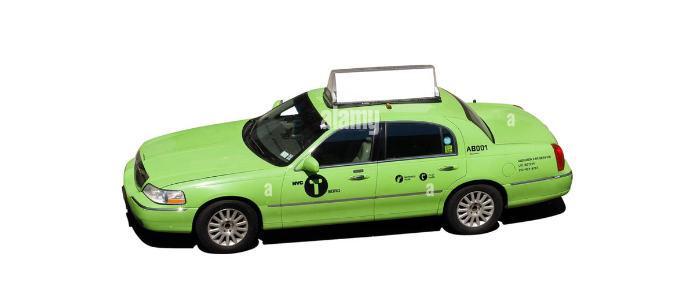
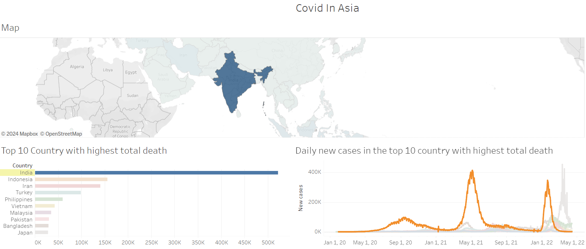

Below is the list of my portofolio

Object Oriented Program in Python
This Python project adopts Object-Oriented Programming (OOP) principles to create a structured and modular codebase. By utilizing classes, objects, and key OOP concepts like encapsulation and inheritance, the project aims to enhance code organization, reusability, and maintainability, leading to efficient development and easier scalability.

Automated Data Visualization using Autoviz
Exploratory Data Analysis plays a crucial part in data science, the times that consumed to explore data often huge, in this project the package Autoviz is used to minimize the time consumed for EDA by leveraging the power of automation.
>
NYC Green Taxi Trip Analysis
Borough taxi data is crucial for optimizing business strategies and efficiency in the industry. This project extracts insights from NYC borough taxi trip data to benefit companies and drivers. By uncovering patterns, businesses can boost profitability and lower costs. The analysis found low popularity of borough taxis outside Manhattan. To improve business in these areas, strategies like offering coupons or adjusting fares are needed.
>
Simple Library Database Aplication
Python, being an open-source programming language, offers extensive versatility across various applications. In this project, Python's versatility is showcased through the development of a straightforward application capable of performing Crude operations (Create, Read, Update, and Delete) to manage a library's book database.
>
Neural Network Classification
>
Covid in Asia's Dashboard